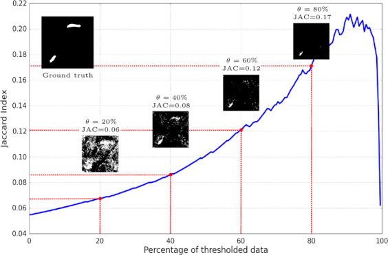
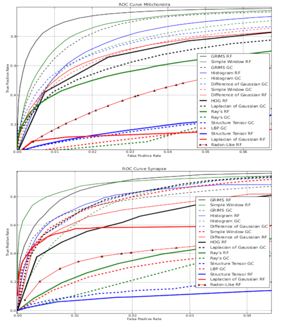
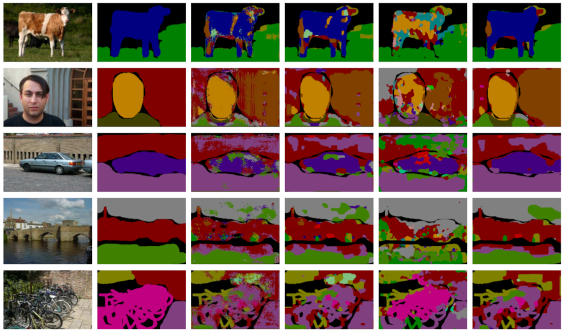
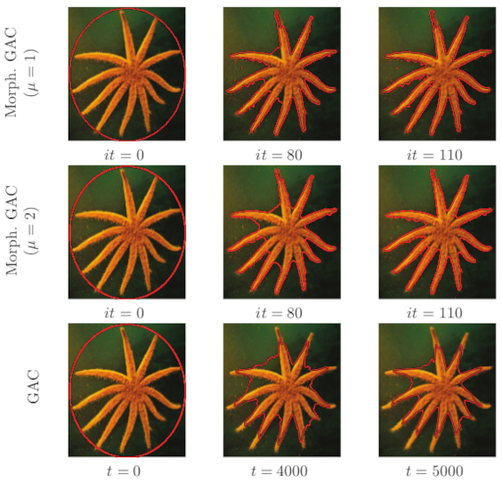

Segmentation
|

Multi-class segmentation of neuronal structures in electron microscopy images.
We consider the simultaneous segmentation of two structures using the PI-Boost, namely,
synapses with mitochondria, and mitochondra with membranes. To this end we select three image stacks encompassing different SBFEM
acquisition technologies and image resolutions. We introduce both a new Boosting algorithm to perform feature scale selection and the
Jaccard Curve as a tool compare several segmentation results. We then experimentally study the gains in performance obtained
when simultaneously segmenting two structures with properly selected image descriptor scales. The results show that by doing so we
achieve significant gains in segmentation accuracy when compared to the best results in the literature using boosting algorithms.
Simultaneously segmenting several neuronal structures described at different scales provides voxel classification algorithms with highly discriminating features that significantly improve segmentation accuracy. Related Publications: BINF'2018 |
|

Feature descriptors for Mitochondria and Synapse Segmentation. Full understanding of the architecture of the brain is a long term goal of neuroscience. To achieve it, advanced image processing tools are required, that automate the the analysis and reconstruction of brain structures. Synapses and mitochondria are two prominent structures with neurological interest for which various automated image segmentation approaches have been recently proposed. In this work we present a comparative study of several image feature descriptors used for the segmentation of synapses and mitochondria in stacks of electron microscopy images. Related Publications: ICPR'2014 |
|

Non-parametric Higher-Order Random Fields for Image Segmentation.
Models defined using higher-order potentials are becoming
increasingly popular in computer vision. However, the exact representation
of a general higher-order potential defined over many variables is
computationally unfeasible. This has led prior works to adopt parametric
potentials that can be compactly represented. In this work we proposed a
non-parametric higher-order model for image labeling problems that uses
a patch-based representation of its potentials. We use a known transformation
scheme to convert the higher-order potentials to a pair-wise
form that can be handled using traditional inference algorithms. This
representation is able to capture structure, geometrical and topological
information of labels from training data and to provide more precise
segmentations. Other tasks such as image denoising and reconstruction are
also possible. We evaluate our method on denoising and segmentation problems
with synthetic and real images.
Related Publications: ECCV'2014 |
|

A morphological approach to curvature-based evolution of curves and surfaces. We introduce new results connecting differential and morphological operators that provide a formal and theoretically grounded approach for stable and fast contour evolution. Contour evolution algorithms have been extensively used for boundary detection and tracking in computer vision. The standard solution based on partial differential equations and level-sets requires the use of numerical methods of integration that are costly computationally and may have stability issues. We present a morphological approach to contour evolution based on a new curvature morphological operator valid for surfaces of any dimension. We approximate the numerical solution of the curve evolution PDE by the successive application of a set of morphological operators defined on a binary level-set and with equivalent infinitesimal behavior. These operators are very fast, do not suffer numerical stability issues and do not degrade the level set function, so there is no need of re-initializing it. Moreover, their implementation is much easier since they do not require the use of sophisticated numerical algorithms. We validate the approach providing a morphological implementation of the Geodesic Active Contours, the Active Contours Without Borders and Turpopixels. In the experiments conducted the morphological implementations converge to solutions equivalent to those achieved by traditional numerical solutions, but with significant gains in simplicity, speed and stability. Related Publications: CVPR'2010, PAMI'2014 |